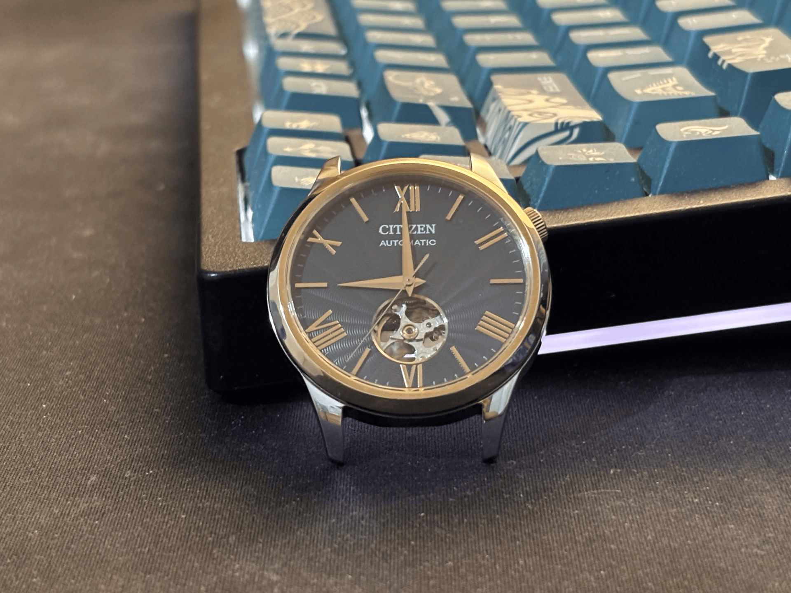

With a shorter focal length at a closer distance, the camera is still able to capture the entire face, but sees parts of the face that are offset from center at more extreme angles, causing distortion. The edges of shapes also block more, causing the ears to not be visible.


With the presence of sharp angles in the building, the "extreme angles" mentioned in Part 1 are more apparent.
